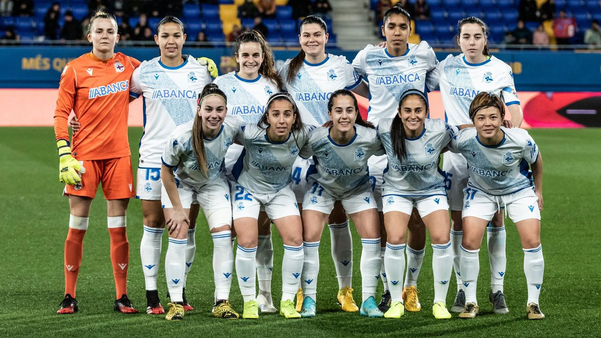

El Real Club Deportivo de La Coruña Femenino, que tiene como nombre oficial Real Club Deportivo ABANCA por razones de patrocinio, es un equipo de fútbol femenino español de la ciudad de La Coruña que milita actualmente en Primera División. Es la sección de fútbol femenino del Real Club Deportivo de La Coruña.
La primera sección de fútbol femenino del Deportivo de La Coruña apareció en el invierno de 1983/84, cuando el Deportivo se hizo cargo del Karbo C.F. y pasó a llamarse Karbo Deportivo,6 desapareciendo en 1988 por problemas económicos.
La sección femenina fue recuperada en 2016, tras una campaña de firmas.
El equipo que posteriormente daría lugar a la sección femenina del Deportivo se fundó en 1968 como Karbo Club de Fútbol por Ramón Carrasco y Mª Carmen Borrego, un matrimonio que regentaba un centro de enseñanza en el barrio coruñés de Los Mallos llamado Karbo, nombre acrónimo formado por las primeras sílabas de los apellidos de sus fundadores.
El presidente, Francisco Cadahia, y el técnico, José Mañana, formaron un grupo de 20 mujeres con edades comprendidas entre los 15 y 28 años y disputaron por primera vez un partido en unas fiestas locales. En estos primeros años, el modestísimo equipo del Karbo Club de Fútbol no tenía relación alguna con el Deportivo de la Coruña. Jugaban sus partidos en dos campos de fútbol existentes en el barrio de los Mallos. Durante su primera etapa el equipo jugó torneos amistosos y oficiosos, ya que la Real Federación Española de Fútbol no incorporó el fútbol femenino hasta 1980.A nivel internacional disputaron múltiples torneos, destacando en dos ocasiones el Torneo de las Siete Naciones, logrando el subcampeonato en 1980 frente al Borussia Mönchengladbach1 con un resultado de 2-1el cual se disputó en Olivet, Orleans (Francia).
Su primer título estatal fue la Copa de la Reina, en Tarragona un 28 de junio de 1981, torneo todavía no oficial bajo la denominación de Copa Reina Sofía. Venció en la final contra el Risco (2-1), con remontada y dos goles de Lis Franco. En la temporada 1982/83 se celebró la primera Liga gallega de fútbol femenino que serviría como sistema de clasificación para la primera Copa de la Reina de Fútbol oficial organizada por la RFEF. El Karbo ganó la liga con autoridad, marcando 65 goles y encajando solamente cuatro.En la Copa vencería al Txorierri de Erandio en la fase previa. En la fase final disputada en Getafe se llevaría la copa tras vencer a la Peña Barcelonista Barcilona en la semifinal por 2-3 y al CD Porvenir en la final por 4-1.

 © ® deporcoruña@gmail.com @deportivo
© ® deporcoruña@gmail.com @deportivo